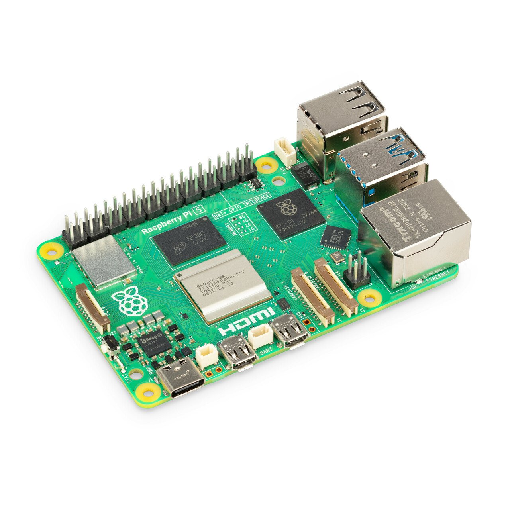
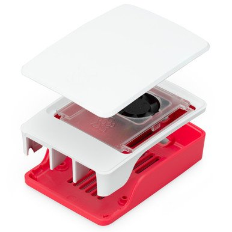
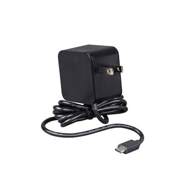
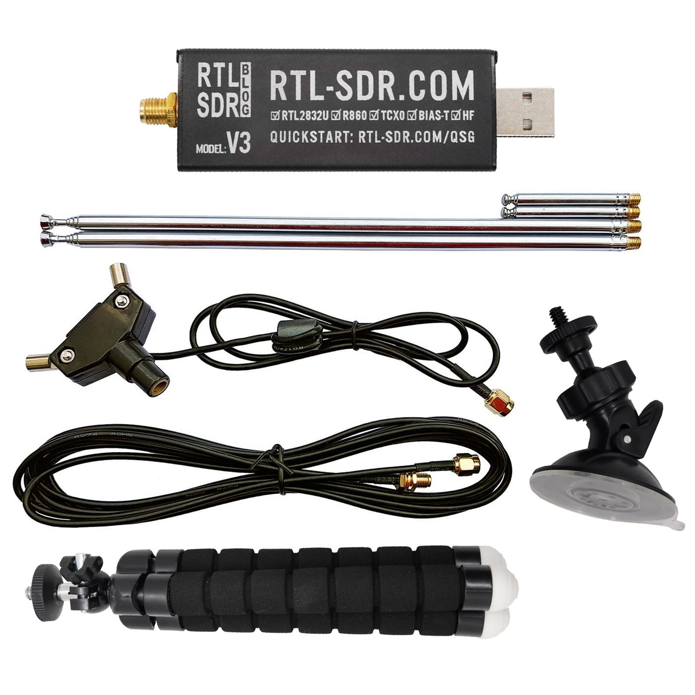
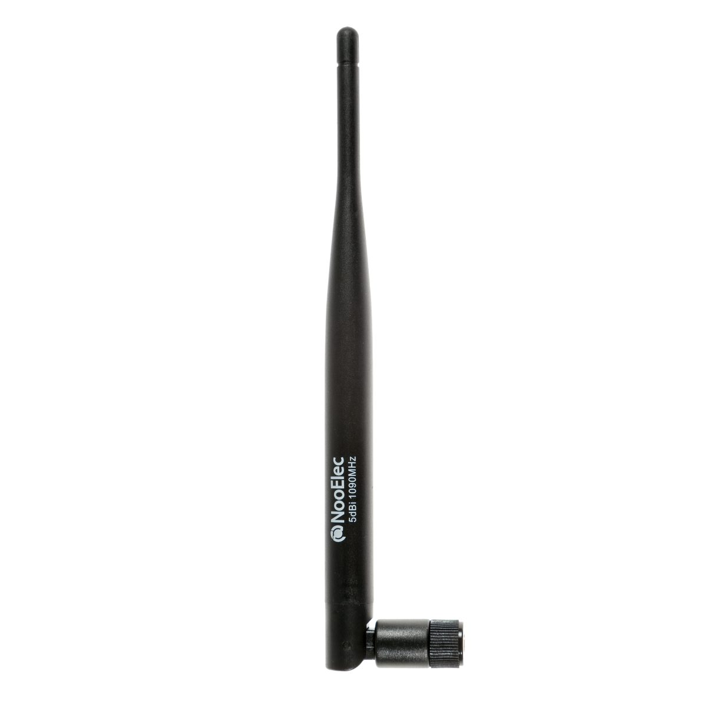

Home / Detection Electronics / Raspberry Pi Remote ID + ADS-B Receiver Kit
Detection Electronics · Kit
Raspberry Pi Remote ID + ADS-B Receiver Kit
$399 ships from us after payment
- Remote ID and ADS-B on one Raspberry Pi 5 sit
- Official 27 W USB-C supply and official Pi 5 case with fan
- Separate receive board plus a wideband listen radio and dipole
- 1090 MHz SMA whip for crewed-aircraft broadcasts
- No battery. Receive only. Not Fusion Sensor. Not V4
Ships after payment from US shops to the address on the Stripe receipt. Sold by Dark Sky Systems LLC. Receive only. Card via Stripe. We do not store it.